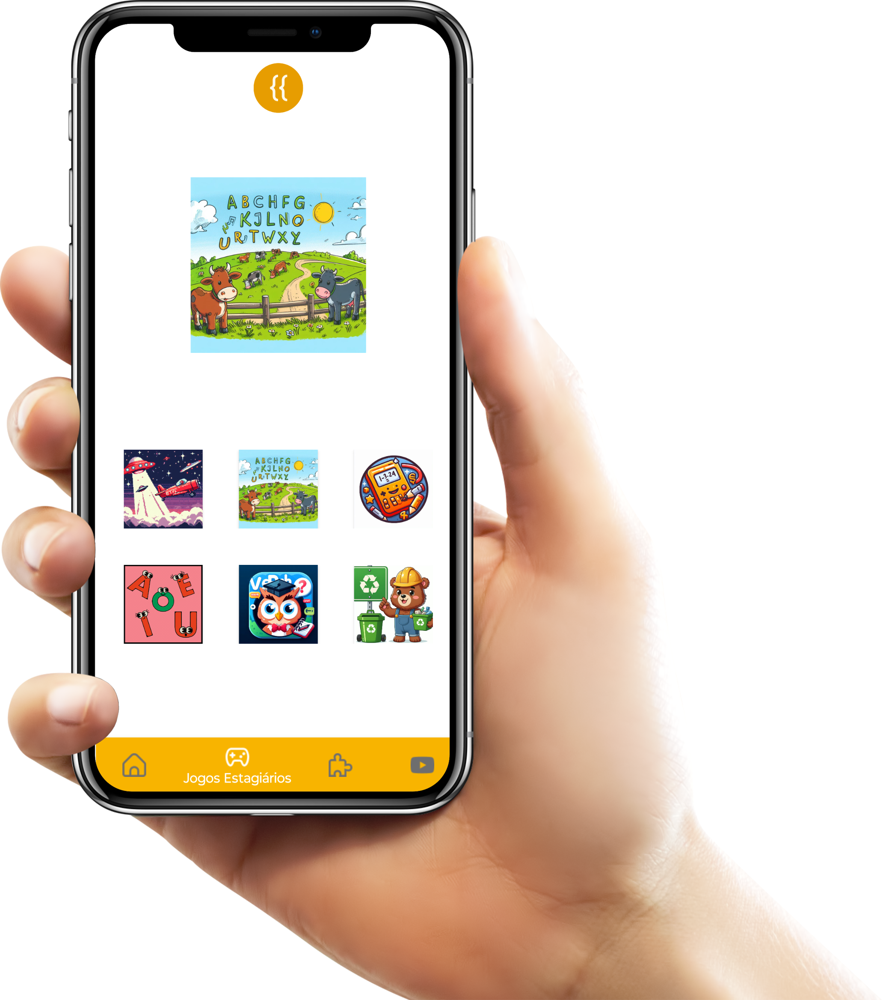

Registro do projeto
O aplicativo Android também faz parte do acervo.
A versão móvel foi criada para facilitar o acesso aos jogos em celulares e apoiar a apresentação dos trabalhos em outros contextos.
Downloads preservados
Uma forma adicional de acessar o projeto.
Os links abaixo são os mesmos endereços registrados na versão anterior do site. O QR code leva à página de links do projeto e o botão textual continua disponível como alternativa.
A disponibilidade dos serviços externos depende dos próprios provedores de download.

QR code
Abrir a página de links
Aponte a câmera para o código ou use o botão abaixo. Nenhuma biblioteca externa é necessária para exibir este QR code.